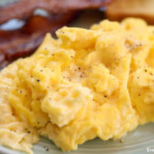

Scrambled Eggs

Description
I don't know about you, but I really like scrambled eggs. It's also not too hard to make them, but plenty of ways to make them badly which is likely worse than never making them at all. Lemme show you how I like to cook mine, so you'll get the basics.
Ingredients
- Eggs, duh (but you can do this with just egg whites if you like)
- Cooking cream
- Cream cheese
- Butter
- Salt and pepper (for taste)
Steps
- Start on a cold pan, drop a knob of butter in and crack the eggs into the pan. Turn the heat on to low.
- Using your spatula (or any other cooking instrument you may have), start mixing the butter and egg by moving your spatula in a circular motion. The key is to keep mixing, otherwise the eggs will cook unevenly.
- When the eggs start to firm up a little, take it off the heat briefly and add in the cooking cream and cream cheese. Put it back on the heat and mix again.
- Cook until eggs start to really firm up and there is only a bit of runny liquid left. From here you can choose to just take it off and serve, or cook to your preferred texture. Add salt and pepper to taste, and serve.
Home